If you are using a version prior to v6.0.300, you can view the user interface documentation for your version of the product on the User Interface (Legacy) topic.
If you are using a version prior to v6.0.300, you can view the user interface documentation for your version of the product on the User Interface (Legacy) topic.Process Director’s user interface for v6.0.300 is very different from previous versions, and represents a fundamental change for administrators and process designers. At BP Logix, we've christened this new user interface "Navigator 2.0".
If you are using a version prior to v6.0.300, you can view the user interface documentation for your version of the product on the User Interface (Legacy) topic.
Unlike the tabbed user interface for previous version of Process Director, v6.0.300 introduces a menu-based navigation scheme to provide quicker and easier access to the various features available in the product. The new menus are arrayed across the top of the page and are only visible to users with the appropriate permissions. To provide the fullest overview of the available menu items, we'll look at what a fully authorized system administrator sees.

At the top of the page a navigation bar enables you to access the functions available for your user role/permissions. The navigation menus on the left side of the page enable you to view the Content List, navigate to different Workspaces, or to access the IT Admin Settings for Process Director. On the right side of the navigation bar, the User Profile icon provides access to your user profile page and, if applicable, other functions.
Immediately below the navigation bar, a Workspace bar shows the name of the currently displayed Workspace on the left side of the page. In the example shown above, we're viewing the Admin Profile Workspace. Immediately to the right of the Workspace name, any navigation buttons used in the Workspace will be arrayed from left to right. In this example, we have a single navigation button, which, when clicked, will take you to the Workspace Home page.
Below the Workspace bar, the contents of the current folder are displayed. Clicking on any item in the contents pane will navigate to that item by opening it.
Lets take a closer look at each item in this interface.
There are three possible navigation menus displayed in the navigation bar, Content List, Workspaces, and Settings. System Administrators will have access to all three of these menus. Normal end users will see only the Workspaces menu, and then, only if they are assigned to more than one workspace. Users assigned to a single Workspace, and with no access to the Content List, will not see any menu items in the navigation bar.
The Content List menu is a single, clickable menu item that opens the folder navigation tree for the full Content List.

By default, the Content List tree is dismissable, which is to say that if you click outside of it, the tree will disappear. A Pin icon ( ) will when clicked, make the tree persistent, to keep the folder list permanently displayed as part of the content list. While the tree is dismissable, the folder contents pane of the "Content List" will be grayed out. Clicking on the grayed out area, or other area of the page, will dismiss the tree. But, once you click the Pin icon and make the tree persistent, the current contents pane will be accessible on the right side of the page, and the tree will be accessible on the left, similar to the UI convention that was used in previous versions of the product.
) will when clicked, make the tree persistent, to keep the folder list permanently displayed as part of the content list. While the tree is dismissable, the folder contents pane of the "Content List" will be grayed out. Clicking on the grayed out area, or other area of the page, will dismiss the tree. But, once you click the Pin icon and make the tree persistent, the current contents pane will be accessible on the right side of the page, and the tree will be accessible on the left, similar to the UI convention that was used in previous versions of the product.

You can navigate through the content using either the folder tree pane on the left, or the contents pane on the right. As you do, both panes will update to display the current content you're viewing.

The treeview pane offers several features to make navigating through the Content List more convenient.
The Expand All icon ( ) will, when clicked, open the entire structure of the folder tree.
) will, when clicked, open the entire structure of the folder tree.

This same icon will, while the tree is expanded, automatically change to a Collapse All Icon ( ). Clicking the icon will collapse the tree view to its original state.
). Clicking the icon will collapse the tree view to its original state.
By default, system folders such as [Custom Tasks], [Business Values], [Data Sources], or any other folder whose name is placed in square brackets, will be hidden from view. The Show System Folders icon ( ) will, when clicked, display these folders in the tree.
) will, when clicked, display these folders in the tree.

Again, this icon automatically changes to the Hide System Folders icon ( ) while the system folders are displayed, and clicking it will hide the folders again.
) while the system folders are displayed, and clicking it will hide the folders again.
A search bar that's labeled "Enter filter phrase" enables you to enter a search term. When you enter your desired term, any Content List items whose names match the search term you enter will be displayed in the tree.
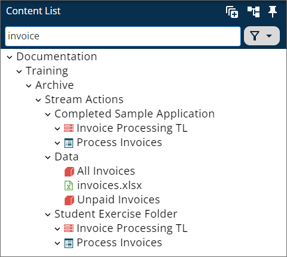
In the example above, using the search term "invoice" returns all Forms, Process Timelines, or other objects whose names contain the term "invoice". Clicking on any item in the tree will open it directly.
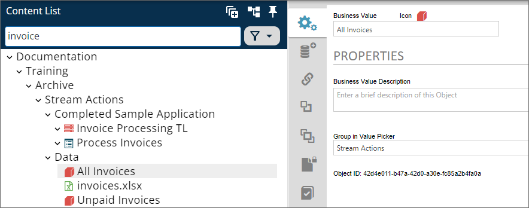
To the right of the search bar, a Filter menu enables you to select objects of a specific type, so that only those obvect types are displayed in the tree.
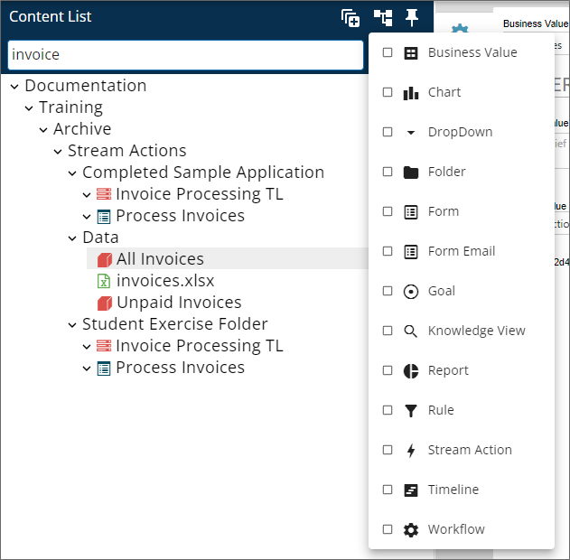
Selecting one or more items from the list of object types will filter the tree to show only objects of the selected types.
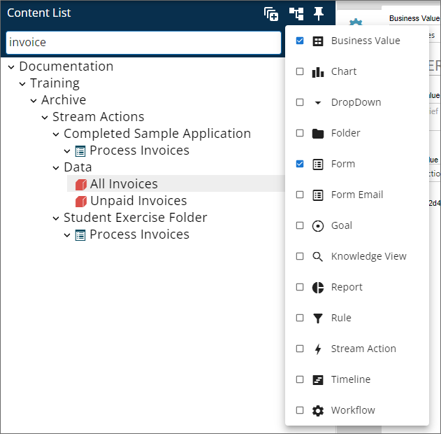
Notice that, in the example above, the filter works in conjunction with the search bar to show only Business Values and Forms whose names contain the search term. You do not, however, have to use the search bar in conjunction with the filter. If no search term is entered, the filter will still change the tree display to show only object types that match the filter you select.
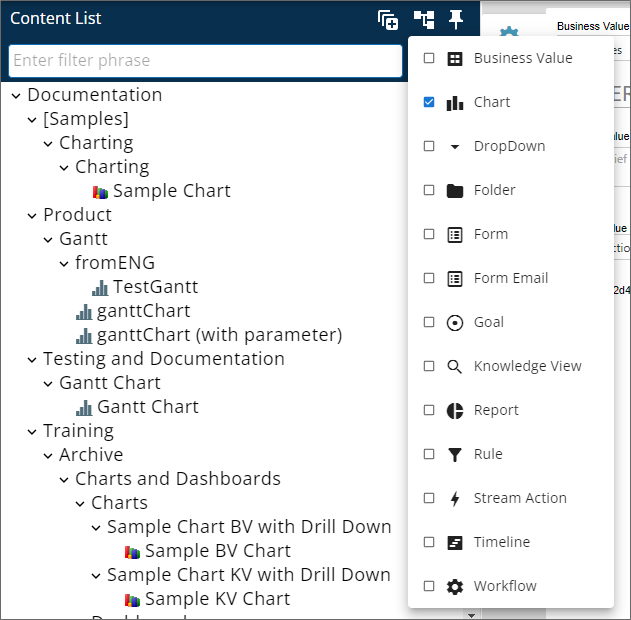
The release of Process Director v6.0 introduced an updated look and feel for the Content List, as well as the display of Knowledge Views. While the functionality is largely unchanged, the UI presents it slightly differently.
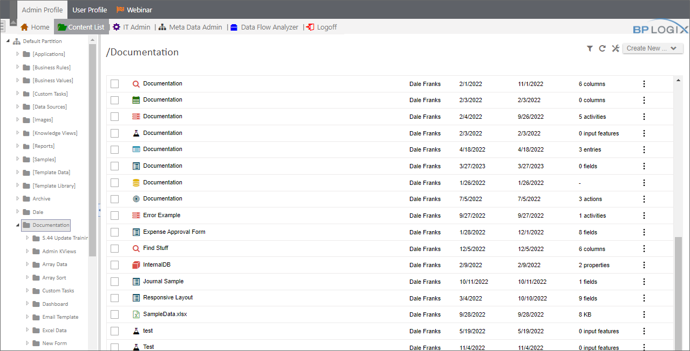
When a Content List object is selected in the list, the action buttons that appear at the top of the Knowledge View are also styled differently, though the available options are the same.
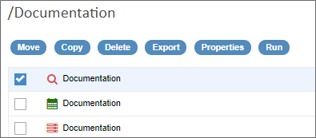
Similarly, the Icons displayed on the right side of each object row have been replaced by a new, context-sensitive menu, from which you can select the operation that was represented by an icon in previous versions of the product.
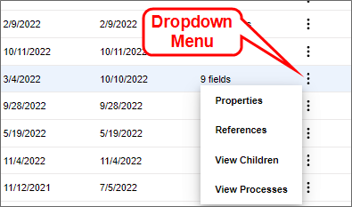
This new UI appearance is optional, via the configuration of the Global Knowledge Views on the system.
Every folder in the Content List has folder definition properties that can be accessed by clicking on the folder name, and, when the folder opens, clicking on the Properties icon to display the folder definition.

We'll discuss the various tabs that are arrayed on the left side of the object definition below, but, for now, in the Properties tab of a Folder definition, you can rename the folder by changing the Folder Name property. Similarly, you can change the default folder icon by clicking the folder icon displayed in the Icon property, and selecting a new Icon from the Icon Chooser.
There are three very important properties displayed at the bottom of the Properties tab:
Each of these properties enable you to specify a process that you want to start automatically when the listed events occur. For instance, you can start a process automatically when any document is imported into the folder. This would enable you to set up a scheduled file import into the Content List folder, and, each time a document imports, run a process on that document, which will automatically attach the imported document to the process.
Objects in the Content List can be selected by checking the box that appears at the left side of each row in the Content List. When you click the check box, to select an item, several Action Buttons will be displayed, to enable you to move, copy, export, etc., the selected item.
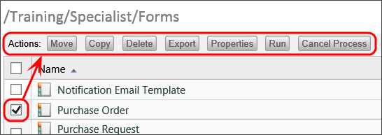
The definition for each Process Director definition object is presented in a tabbed interface.
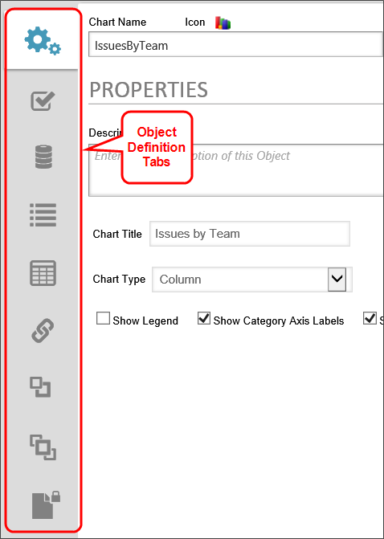
Each object has a set of tabs that are specific to the object type of the definition. Additionally, each process Director Object has a set of common tabs that are the same for every object.
Every Process Director object has a Properties tab, and the contents of this tab will vary widely. For instance, the Properties tab for a definition object usually contains the basic configuration properties for the object, while the Properties tab of an object instance will display, but not generally allow you to configure, some properties of that instance. Let's take the Form object as an example. The Form definition's Properties tab provides several configuration settings that you can edit.
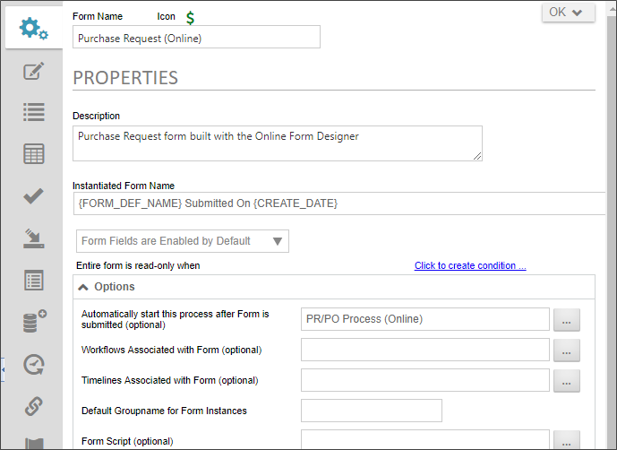
On the other hand, the Form instance's Properties tab displays the field contents of that form instance, and, for Process Director v5.1 and higher, enables you to refresh the data, or to export the data to a CSV file by using the icons that appear in the upper right corner of the information grid.
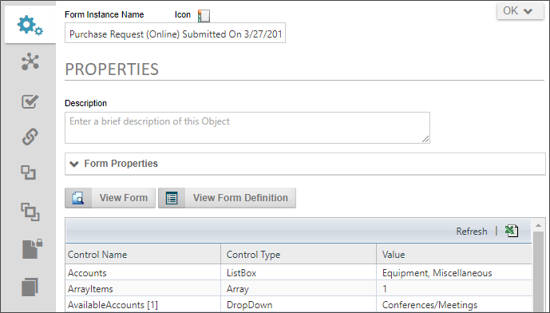
Again, the types of information you'll see on the Properties tab is widely divergent, so the detailed explanation for configuring the Properties tab will be given in the documentation for each individual object.
The Object Links tab shows all Process Director objects which have a link to the object definition, or to which the definition has a link.
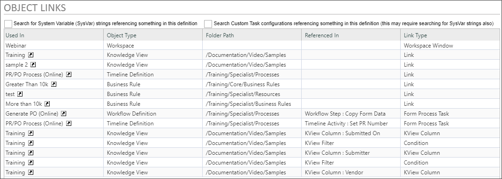
Examples of linked objects would include:
Check boxes enable you to show System Variable or Custom Task references to the object, if desired:
It is important to remember that these two check boxes are interdependent. For example, clicking on the System Variable strings... check box won't return system variable strings used in a Custom Task unless the Custom Task configurations... check box is also checked. Similarly, checking the Custom Task configurations... check box won't return results for references by System Variable in a Custom Task unless the System Variable strings... check box is also checked.
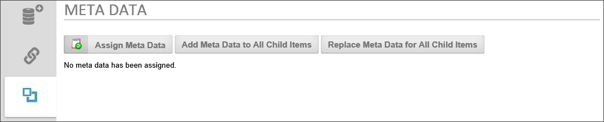
Meta Data categories and attributes can be assigned to each Definition.
When you click the Assign Meta Data button, it opens a dialog box from which you can choose the Meta Data categories you wish to assign.
When you click the Add Meta Data to All Child Items button, all of the Meta Data assigned to the definition will be copied to all of the instances in addition to any Meta Data that is already assigned to the instances.
When you click the Replace Meta Data for All Child Items button, all of the Meta Data assigned to the definition will be copied to all of the instances and replace any Meta Data that is already assigned to the instances.
For more information about Meta Data and its configuration, please refer to the Meta Data section of this guide.
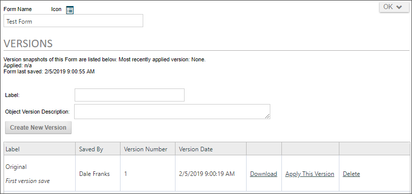
Process Director implements versioning for all objects, and each version consists of a complete snapshot of the object. Each version can be downloaded, deleted, or applied to the object to replace the current version.
To create a new version of the object, first fill out the version properties. The Label is the name you wish to give the version, and the Description is a brief explanation about the version that can provide additional information. Once you've finished setting the properties, click the Create New Version button to create the version.
Each version will display in a table that specifies the Label, the person who created the version, the version number, and the version creation date. Additional columns provide links to download an XML export of the version, to replace the current version with the selected version, or to delete the version.
 While any object can be versioned, BP Logix recommends creating versions at the application folder level to create a snapshot of the entire application, rather than versioning each object individually. Please refer to the topic on importing and exporting content for recommendations on how to organize your Content List into application folders.
While any object can be versioned, BP Logix recommends creating versions at the application folder level to create a snapshot of the entire application, rather than versioning each object individually. Please refer to the topic on importing and exporting content for recommendations on how to organize your Content List into application folders.
The name of the version object.
A description of the versions purpose, changes made from previous versions, or other relevant information.
Once you've filled out the properties, click the Create New Version button. Process Director will record a snapshot of the version, and a new version row will appear at the bottom of the screen.
Links on each version row give you the option to apply the version as the current version in use, or delete it. If you choose to apply a version, Process Director will display a status screen to notify you of the success or failure of the attempt to apply it.
From the list of versions, you may
When a folder is selected for versioning, the version will contain all of the Content List objects contained in the folder. Reverting a folder to a previous version, therefore, will revert all of the objects in the Content List to the reverted version.
Just as definition objects have a version, Form instances also have a versioning scheme that is automatically applied by Process Director. When a Form instance is opened for the first time by a user, the Version number is "0". Each time the Form instance is edited and saved, the version number increases by an increment of 1. Unlike definition objects, however, Form instances can also have negative version numbers.
A negative version number for e Form instance has a special meaning. It means that the Form instance has been created but not submitted. For example, a, Form with a version number of -1 is a form attached to a Timeline instance but which has never been viewed by a user. A version number of -2 means that the user opened a new form and did a "save for later", which did not submit the Form, even though the data was saved.
By default, Forms with a negative version number won't be displayed in a Knowledge View because they aren't yet submitted forms, but are only partially complete. The negative version number also tells the Process Director that any configured form field "default values" still apply to the Form. Thus, when a user does open a form with a version number of -1, the default form field values will be applied. You can increment the version from a negative to a positive value, for example, by using custom scripting, but this will prevent default values from being applied.
Process Director implements fine-grained permissions for all objects. Though we recommend that permissions be set at the folder level, each Process Director object may have unique permissions set on the object, using this tab.
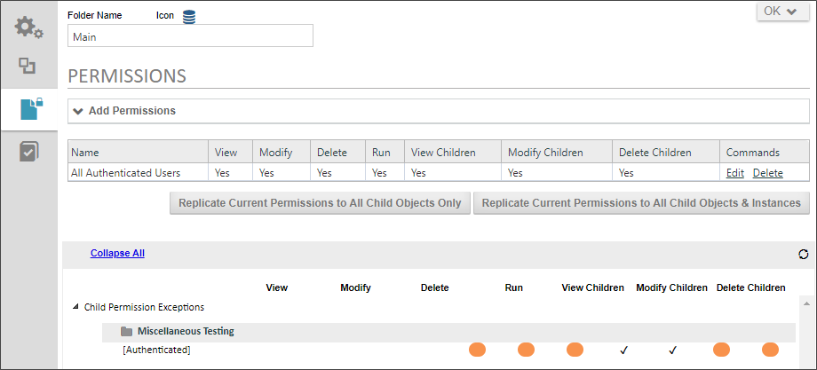
For Process Director v5.1 and higher, a Permissions Exceptions section will appear at the bottom of the page that shows all child objects whose permissions don't match that of their immediate parent. However, if a folder's permissions match its parent but it has children that don't match its own permissions, then that folder will be shown in order to show the children whose permissions don't match their parent.
For detailed information on how to set permissions, please see the Permissions topic.
Several Process Director object definitions include a References tab that displays a list of all objects or system variables that the object references. The purpose of the References tab is to attach a reference object, such as a file or document, to an object definition that will, when an instance is created, attach the reference object to the instance. For example, perhaps there is a document you'd like to upload, or a Content List document that you'd like to add, as a reference to the object definition. On the references tab, there is a Create New... actions menu in the upper right corner of the screen that enables you to choose:
If you choose this option, the upload dialog box will appear to enable you to upload a document or file as a reference to the definition object.
If you choose this option, an Object Picker will appear to enable you to select an item from the Content List.
Selected reference items will appear in the list on the References tab.
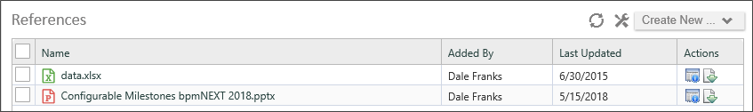
You can select the check box next to each reference item to view its properties, delete it, or set a Group Name for the object.
Once an instance of the definition object is created, the reference objects will automatically be attached to the instance. You can view the attachments in the Instance properties of the object in the Content List. For forms, you can view the attached reference objects via a ShowAttach control on the form. For example, when a new form instance is created using the reference objects above, you can view the attached reference objects on the form instance.
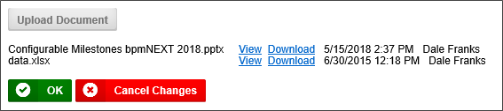
Process Director v4.55 and higher maintains a log of all import events, Active Directory Synchronizations, and Evaluations. These logs are displayed for each object in the object definition's Import History tab.
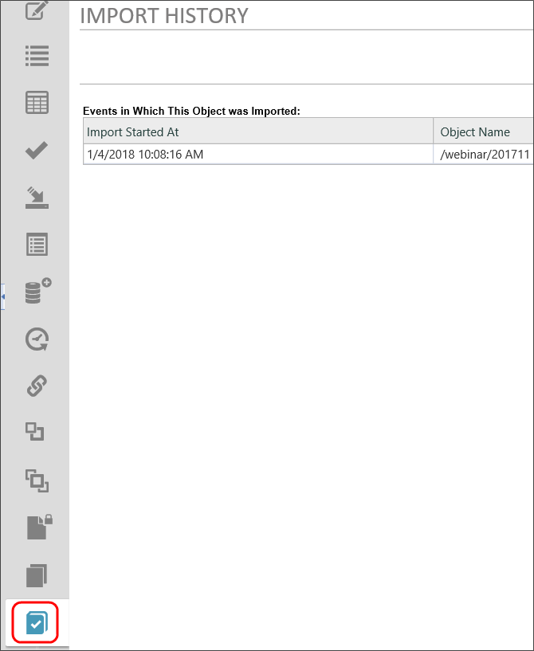
This import history can be disabled using the fEnableDatabaseLogs custom variable. By default, the logs are maintained for 30 days, but you can change the number of days to maintain the logs in the database by using the nImportLogDays custom variable.
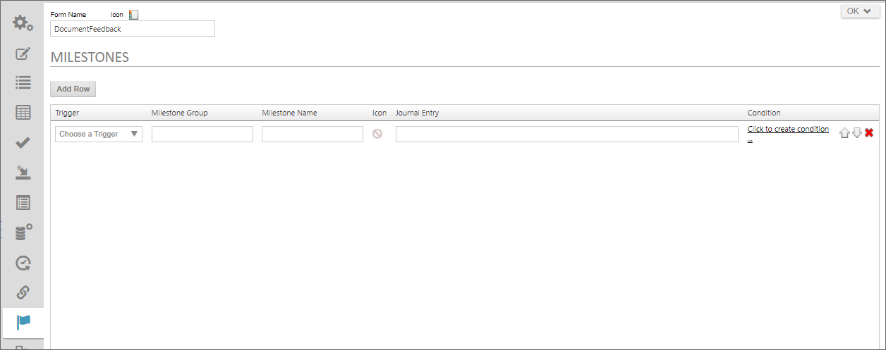
Users of Process Director v4.6 and higher have a Milestones tab available in event-driven objects such as Forms or Process Timeline definitions. Milestones are also accessible via the Milestone System Variables.
When creating a process application in Process Director, there are a number of Process Timeline and form events you can use to drive some decisions. But application events, while helpful, often don't provide the business-level, broad semantic context that is sometimes needed. Broad semantic context is where Milestones live. For instance you might want business-level events that provide information to drives business decisions such as:
Process application events generally occur sequentially, but Milestone achievement may rely on disparate, asynchronous events and decisions. Similarly, while the events at the application level are very good at letting you know where you are in a specific process, they don't provide high-level, business-related information. That high-level information is often necessary to drive lower level transactional and semantic decisions, e.g.:
Process Director enables you to generate business events from the lower-level transactional data, then combine business events to produce Milestones. You can use both events and milestones to drive application behavior and collaboration.
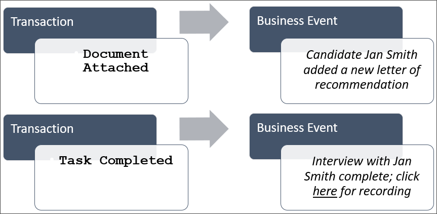
Milestone logging enables you to create special logs for business events and display those logs on a Form, using the Journal control.
You can add as many Milestones as you desire by clicking the Add Row button at the top of the tab.
For every event that you'd like to log, you have the following options.
The following triggers are generally available, though they don't include the Timeline Activity events, such as Activity Started, etc.:
| EVENT | DESCRIPTION |
|---|---|
| Process Started | Invoked whenever a Process Timeline is started. |
| Activity Started | Invoked whenever a Timeline Activity is started. |
| Activity Completed | Invoked whenever a Timeline Activity is completed. |
| User Task Complete | Invoked whenever a user completes an assigned task. |
| Document Added to Process | Invoked whenever a new document is attached to a process. |
| Document Updated in Process | Invoked whenever an existing document attachment is edited. |
| Form Added to Process | Invoked whenever a new Form is added to a process. |
| Condition Met | Invoked any time that a condition is met while milestone processing is occurring. |
The Milestone Group is a text value that is used to organize the activities. When you assign a log event to Display in the Activity Log control, all of the available log items will be grouped into the groups you create with this setting. So, you may have a "Documents" group, into which you might place all of the events that are invoked when document attachments are added or edited during the process. In the Object Picker that you use to display events in the Journal, all of those events will be organized into a Treeview Node, with the Group Names you create at the highest level of the Treeview.
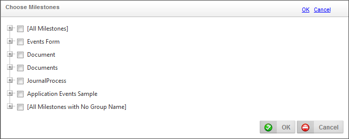
The text name you wish to use for the Milestone.
You can choose an icon for the event from the icon chooser.
Milestones can't use the older, raster-based icons displayed in the Older Built-in Icons or Custom Icons tabs of the Icon Chooser.
This is the logging message you wish to appear in the Journal control.
You can use the Condition Builder to create a condition set that must apply before the event is logged. Only events that match the condition will be logged.
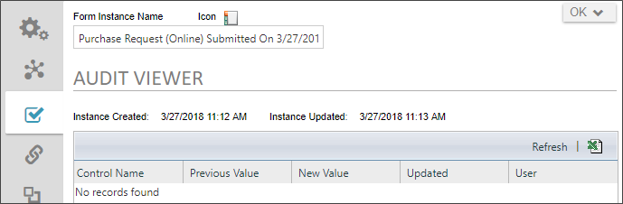
Audit logs for Form and Case instances can be viewed on the Audit Viewer tab for the instance. Fields changes and other audit information will be displayed on this tab for instances that have the Audit Field Changes property checked in the object definition's properties.
The view can be refreshed by clicking the Refresh link, or exported to a CSV file by clicking on the Excel document icon, both of which are in the upper right corner of the information grid.
Overall control of saving or running an object definition is embedded in the dropdown menu at the upper right of the definition. While not every object has all of the menu options described below, in general, object definitions give you the following control options.
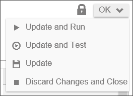
Clicking the Lock icon will lock the definition for editing and prevent other users from editing the definition. Locked definitions are identified by the Release Lock icon () replacing the Lock icon.
The OK button will save and close the definition automatically. When you put your mouse over the OK button, additional menu option will open that you can select.
For users of Process Director v5.22 and below, the User Profile Slideout is a control that appears when you click the upper left corner of the Process Director screen. For users of Process Director 5.23 and higher, the Desktop interface for Workspaces presents the User Profile differently. Please refer to the Desktop Workspace topic for more information.
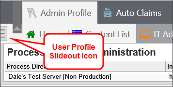
Clicking the Icon opens the Slideout to display the basic user information.

The user has the option to Sign Out of the system from the Slideout. In addition, the user can also access and edit their own user profile page by clicking the Edit Profile button to open the user's profile page. From the user profile page, the user can edit their time zone/localization settings, perform delegation (if allowed by the System Administrator), and add personal/signature images to their profile.
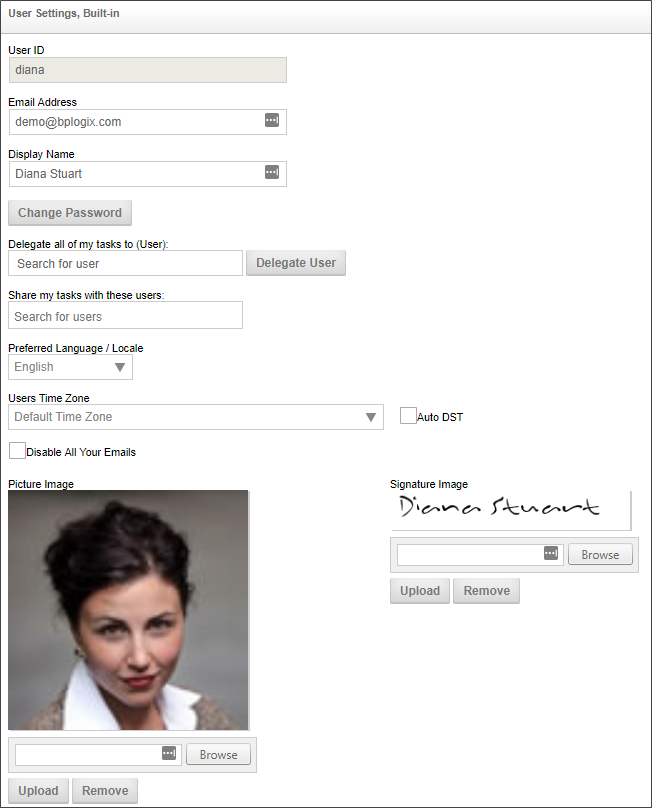